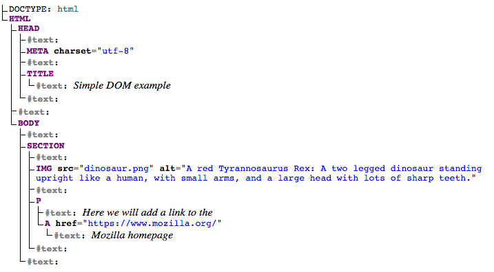
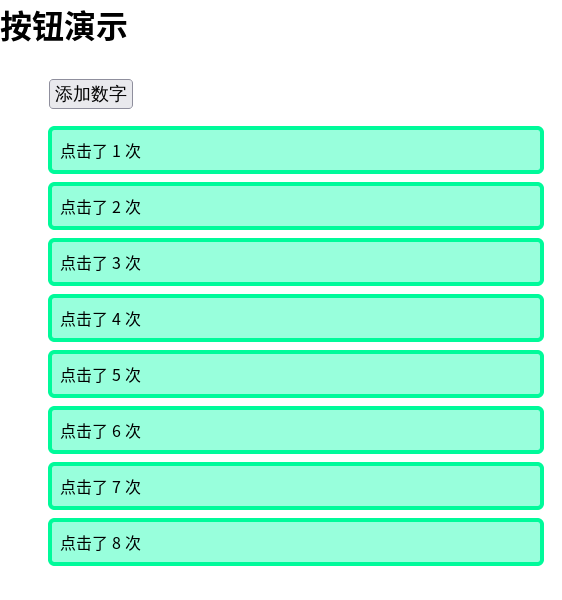
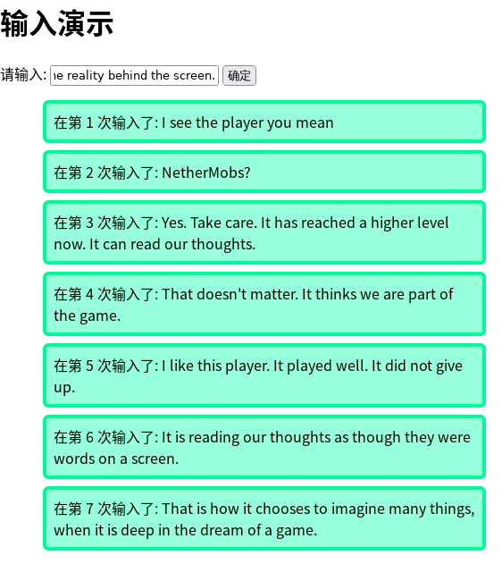

JS —— DOM
本文按照 Mozilla 贡献者基于 CC-BY-SA 2.5 协议发布的以下文章改编:
- https://developer.mozilla.org/zh-CN/docs/Learn/JavaScript/Client-side_web_APIs/Introduction
- https://developer.mozilla.org/zh-CN/docs/Learn/JavaScript/Client-side_web_APIs
- https://developer.mozilla.org/zh-CN/docs/Learn/JavaScript/Client-side_web_APIs/Manipulating_documents
本文基于 CC-BY-SA 4.0 协议发布。
很抱歉现在才提到 DOM，这在 JS 教程里面可以算是一种异类了。但是我觉得这是有必要的。因为事先了解一点点程序的运行逻辑，可以少犯一点错误。有句话是这么说的，拿着一把锤子，看啥都想敲两下。JS 不是锤子，而是一个非常强大的工具，所以事先了解再步入，肯定会减少很多不必要的麻烦。
到这里我们的教程就是最后一章了。之后的如果有需要的内容，可能就需要大家通过自己去网上查找相应的文档进行学习了，我们不可能面面俱到，路还是要自己走的。
废话不多说，开始我们的内容吧!
什么是 API
我们之前好像已经提过了，但是已经时隔很久了，所以再讲一次。
应用程序接口（API，Application Programming Interface）是基于编程语言构建的结构，使开发人员更容易地创建复杂的功能。它们抽象了复杂的代码，并提供一些简单的接口规则直接使用。
来看一个现实中的例子：想想您的房子、公寓或其他住宅的供电方式，如果您想在您的房子里用电，只要把电器的插头插入插座就可以，而不是直接把它连接到电线上——要不然实在太可怕了。
同样，比如说，编程来显示一些3D图形，使用以更高级语言编写的 API （例如 JavaScript 或 Python ）将会比直接编写直接控制计算机的GPU或其他图形功能的低级代码（比如 C 或 C++ ）来执行操作要容易得多。
JavaScript 中有很多可用的API — 他们本身并不是 JavaScript 语言的一部分，却建立在 JavaScript 语言核心的顶部，为使用 JavaScript 代码提供额外的超强能力。他们通常分为两类：
- 浏览器 API 内置于 Web 浏览器中，能从浏览器和电脑周边环境中提取数据，并用来做有用的复杂的事情 。我们的 DOM 就是浏览器 API。
- 第三方 API 缺省情况下不会内置于浏览器中，通常必须在 Web 中的某个地方获取代码和信息。例如大名鼎鼎的 JQuery，一个轻量级前端框架，适合一些简单的网页。
浏览器内部的 API 又分这么多种：
- 操作文档的 API 内置于浏览器中。最明显的例子是DOM（文档对象模型）API，它允许您操作HTML和CSS — 创建、移除以及修改HTML，动态地将新样式应用到您的页面，等等。每当您看到一个弹出窗口出现在一个页面上，或者显示一些新的内容时，这都是DOM的行为。 您可以在在Manipulating documents中找到关于这些类型的API的更多信息。
- 从服务器获取数据的API 用于更新网页的一小部分是相当好用的。这个看似很小的细节能对网站的性能和行为产生巨大的影响 — 如果您只是更新一个股票列表或者一些可用的新故事而不需要从服务器重新加载整个页面将使网站或应用程序感觉更加敏感和“活泼”。使这成为可能的API包括XMLHttpRequest和Fetch API。您也可能会遇到描述这种技术的术语Ajax。您可以在Fetching data from the server找到关于类似的API的更多信息。
- 用于绘制和操作图形的API目前已被浏览器广泛支持 — 最流行的是允许您以编程方式更新包含在HTML
<canvas>元素中的像素数据以创建2D和3D场景的Canvas和WebGL。例如，您可以绘制矩形或圆形等形状，将图像导入到画布上，然后使用Canvas API对其应用滤镜（如棕褐色滤镜或灰度滤镜），或使用WebGL创建具有光照和纹理的复杂3D场景。这些API经常与用于创建动画循环的API（例如window.requestAnimationFrame()）和其他API一起不断更新诸如动画和游戏之类的场景。 - 音频和视频API例如HTMLMediaElement，Web Audio API和WebRTC允许您使用多媒体来做一些非常有趣的事情，比如创建用于播放音频和视频的自定义UI控件，显示字幕字幕和您的视频，从网络摄像机抓取视频，通过画布操纵（见上），或在网络会议中显示在别人的电脑上，或者添加效果到音轨（如增益，失真，平移等） 。
- 设备API基本上是以对网络应用程序有用的方式操作和检索现代设备硬件中的数据的API。我们已经讨论过访问设备位置数据的地理定位API，因此您可以在地图上标注您的位置。其他示例还包括通过系统通知（参见Notifications API）或振动硬件（参见Vibration API）告诉用户Web应用程序有用的更新可用。
- 客户端存储API在Web浏览器中的使用变得越来越普遍 - 如果您想创建一个应用程序来保存页面加载之间的状态，甚至让设备在处于脱机状态时可用，那么在客户端存储数据将会是非常有用的。例如使用Web Storage API的简单的键 - 值存储以及使用IndexedDB API的更复杂的表格数据存储。
我们要介绍的 DOM 就属于浏览器内部 API，并且已经几乎被作为 JS 的一部分看待。
API 通常是基于对象的。它们就像普通的对象一样，拥有各种方法，可以进行调用，然后做出你想要的事情来。
DOM 树状结构
DOM 就是用来改变网页 HTML 的内容用的。这可以让你做很多光靠 HTML 本身做不到的事情。
在浏览器标签中当前载入的文档用一个 document 对象来表示。这个对象是一个树状结构。比如这个例子：
1 |
|
显示成为一个树状结构是这样子的：

看到这个你想到了什么？对，就和电脑的文件夹一样，一层一层往下套。我们把每个 HTML 元素对应在树中的入口称为节点。我们有这么几个术语：
- 元素节点: 一个元素，存在于DOM中。
- 根节点: 树中顶层节点，在HTML的情况下，总是一个HTML节点（其他标记词汇，如SVG和定制XML将有不同的根元素）。
- 子节点: 直接位于另一个节点内的节点。例如上面例子中，IMG是SECTION的子节点。
- 后代节点: 位于另一个节点内任意位置的节点。例如 上面例子中，IMG是SECTION的子节点，也是一个后代节点。IMG不是BODY的子节点，因为它在树中低了BODY两级，但它是BODY的后代之一。
- 父节点: 里面有另一个节点的节点。例如上面的例子中BODY是SECTION的父节点。
- 兄弟节点: DOM树中位于同一等级的节点。例如上面例子中，IMG和P是兄弟。
- 文本节点: 包含文字串的节点
可能会有点难理解，但是在实际查阅文档的时候，你将会遇到大量代码术语的使用，所以事先了解是有必要的。
基本的 DOM 操作
在 HTML 当中 </body> 之前（就是 <body></body> 结尾的地方）加入这样一行:
1 | <script src="script.js"></script> |
在同目录下新建一个 script.js，然后开始你的表演。
修改元素
要想修改一个元素，我们要先选中它们。操作 document 对象，使用 querySelector() 方法选中你想要的元素。这个方法使用一个 CSS 选择器来筛选元素。
比如我们使用这个代码可以选中页面中第一个 a 元素，并且创建一个引用：
1 | let link = Document.querySelector('a'); |
现在你可以通过 link 对象操作 HTML 当中被选中的元素，比如修改它的文本：
1 | link.textContent = 'Mozilla Developer Network'; |
或者修改指向的链接：
1 | link.href = 'https://developer.mozilla.org'; |
这个 a 元素立即发生了变化，不用去刷新页面就能看到。
这是对单个元素的做法。如果想对多个元素进行匹配和操作，你可以使用 document.querySelectorAll()，这个方法匹配文档中每个匹配选择器的元素，并把它们的引用存储在一个数组中，你就可以用一个 for 循环进行操作了。
添加元素
让我们进一步看看我们可以怎样来创建新的元素。
- 回到当前的例子，我们先获取到
section元素的引用 — 在已有script中添加下列代码（其他代码也同样处理）：
let sect = document.querySelector('section'); - 现在用
Document.createElement()创建一个新的段落，用与之前相同的方法赋予相同的文本：
let para = document.createElement('p');
para.textContent = 'We hope you enjoyed the ride.'; - 现在可以用
Node.appendChild()方法在后面追加新的段落：
sect.appendChild(para);
- 最后，在内部链接的段落中添加文本节点，完美的结束句子。首先我们要使用{
Document.createTextNode()创建一个文本节点：
let text = document.createTextNode(' — the premier source for web development knowledge.'); - 现在获取内部连接的段落的引用，并把文本节点绑定到这个节点上：
let linkPara = document.querySelector('p'); linkPara.appendChild(text);
现在 HTML 当中的 section 部分变成了这样：
1 | <section> |
你看到的内容应该是这样(图片省略了)：
Here we will add a link to the Mozilla Developer Network
We hope you enjoyed the ride.
— the premier source for web development knowledge.
移动和删除元素
也许有时候你想移动或从DOM中删除节点，这是完全可能的。
如果你想把具有内部链接的段落移到sectioin的底部，简单的做法是：
sect.appendChild(linkPara);
这样可以把段落下移到section的底部。你可能想过要做第二个副本，但是情况并非如此 — linkPara是指向该段落唯一副本的引用。如果你想做一个副本并也把它添加进去，只能用 Node.cloneNode() 方法来替代。
删除节点也非常的简单，至少，你拥有要删除的节点和其父节点的引用。在当前情况下，我们只要使用 Node.removeChild() 即可，如下：
sect.removeChild(linkPara);
要删除一个仅基于自身引用的节点可能稍微有点复杂，这也是很常见的。没有方法会告诉节点删除自己，所以你必须像下面这样操作。
linkPara.parentNode.removeChild(linkPara);
把上述代码行加到你的代码中去
元素样式
你可以使用 JS 操作 CSS。
第一种方法是直接在想要动态设置样式的元素内部添加内联样式。这是用 HTMLElement.style 属性来实现。这个属性包含了文档中每个元素的内联样式信息。你可以设置这个对象的属性直接修改元素样式。假设我们现在创建了一个 para 元素：
1 | let para = document.createElement('p'); |
这对应的 HTML 是这样的：
1 | <p style="color: white; background-color: black; padding: 10px; width: 250px; text-align: center;">We hope you enjoyed the ride.</p> |
现在你可以看到这和普通的 CSS 是差不多的。不同在于 CSS 样式的 JS 属性版本以小驼峰式命名法书写，而 CSS 版本带连接符号（backgroundColor 对应 background-color）。
现在我们来看看另一个操作文档样式的常用方法。
- 删除之前添加到 JavaScript 中的五行代码。
- 在HTML的
head中添加下列代码（外链的 CSS 同理） :
<style> .highlight { color: white; background-color: black; padding: 10px; width: 250px; text-align: center; } </style> - 现在我们改为使用HTML操作的常用方法 —
Element.setAttribute()— 这里有两个参数，你想在元素上设置的属性，你要为它设置的值。在这种情况下，我们在段落中设置类名为 highlight ：para.setAttribute('class', 'highlight'); - 刷新页面，看不到改变 — CSS 仍然应用到段落，但是这次给出CSS规则选择的类不是内联CSS样式。
这其实就是给元素更改了一个类，然后对应的规则就理所当然地加上了。
元素操作
事件
有一些特殊的元素会引发**事件(Event)**，比如 HTML 当中的按钮(button)在被点击的时候就会有 ‘click’ 事件被引发。
可以把相应的函数和事件进行绑定，这样这个事件引发的时候就可以调用相应的函数来处理。比如我们可以做个按一下按钮就在列表中添加一个元素的网页。
有关事件我们有更详细的教程，感兴趣可以自己去看： https://developer.mozilla.org/zh-CN/docs/Learn/JavaScript/Building_blocks/Events
我们先使用 document.querySelector() 来选中对应的 button 元素，然后使用这个元素的 addEventListener() 方法来绑定事件和对应的函数。比如我们要在点击页面中第一个按钮的时候在控制台输出 “Clicked button.” 消息：
1 | let button = document.querySelector('button'); |
看看这个例子
index.html
1 |
|
demo.css
1 | html { |
button.js
1 | // 用来存放自己的全局变量 |
点了几次之后是这样子的：

输入
我们可能还需要从一些输入框(表单当中的 <input> 不见)当中获取输入。现在我们有另一个 HTML，我们将会在每次点击按钮的时候把输入框里面的数据写到列表里面。这个 HTML 的 css 部分和原来的相同，就不再重复列出了。
这里仅仅使用了表单当中的 input 和 label 部件。
label 是一个文本，一般用来说明下面的 input 是干什么的。for 属性里面是一个 id 表明是给对应 id 的 input 元素的 label。
input 有个 type 属性，可以指定这个部件的类型。比如 text 值表明这是个文本框，可以进行输入。而 submit 就成了一个按钮。
在 JS 当中，文本框有个 value 属性，值就是文本框当中输入的值。你也可以用给这个值赋值的方式来覆盖掉原来的值。
完整的指南可以查看https://developer.mozilla.org/zh-CN/docs/Learn/Forms。
index.html
1 |
|
input.js
1 | let myAPP = { |
输入了一些内容之后：

实例
之前都是一些基础用法，现在就来把这些东西用在实战里面吧。
名称空间
在开始之前，我要提一个小小的建议：你最好把自己的所有东西放在一个对象里面，通过对象方法进行调用，这样可以防止命名冲突。因为一个页面包含的所有 JS 代码都是放在一起执行的，如果全局变量太多就有概率会影响到其他的同名变量，导致很多难以预料的问题。
比如我们之前的实例代码：
1 | let link = document.querySelector('a'); |
就可以重新变成这样：
1 | let myTest = { |
占用的名称从 link, sect, para, text 这四个一下变成了只有一个 myTest，可以有效减少撞车机率。
动态调整窗口大小
新建一个这样的 HTML:
1 |
|
我们将会使用这个作为例子，演示一系列的东西。
首先在 <script> 中间创建这样一个函数 ``，在其中放我们需要执行的代码：
1 | function run(){ |
在这个例子中，我们解决了一个常见的问题 — 不管窗口的大小是多少，确保应用程序和它所在的窗口视图一样大。比如你要做游戏，想在游戏中尽可能多地使用屏幕区域，这种方法是很有用的。
我们使用 window 对象来获取窗口的高度和宽度，使用 DOM 对 div 的宽高进行修改。
首先获取高度和宽度, 这两个值包含在 Window.innerWidth 和 Window.innerHeight 属性中。以及对 div 的引用：
1 | let div = document.querySelector('div'); |
接下来，我们将动态地改变div的宽度和高度，使其等于视窗的宽度和高度。 在您的代码下面添加以下两行：
1 | div.style.width = WIDTH + 'px'; |
保存并刷新浏览器 — 现在可以看到不管你使用什么大小的屏幕，div变得和视窗一样大。如果要调整窗口大小使其更大，你可以看到div会保持相同大小 — 因为只有刷新时才会重新执行 JS。
有个更好的办法是让事件来帮助我们实现。 window 对象有一个称为 resize 的可用事件。每次窗口调整大小时都会触发该事件 — 我们可以通过 window.onresize 事件处理程序来访问它，并返回每次改变大小的代码。比如我们的代码可以写成这样：
1 | function run(){ |
最后那个是要把函数本身传递给它，所以是不需要在 run 后面加上括号的。现在试试变化你的浏览器窗口，看看会发生什么。
结尾
现在我们了解了关于 DOM 的很多东西，这可以为你去做一系列的网页做铺垫。
推荐你们看看这篇： https://developer.mozilla.org/zh-CN/docs/Web/JavaScript/A_re-introduction_to_JavaScript 最好一定要了解里面的所有概念。
我们的教程到了这里，已经是最后一篇了。至此，Web 技术的第三块就已经拼上了。到现在，我们已经学了 7 章 HTML， 8 章 CSS，和 7 章 JS。这些将会成为你的技术的一部分。现在，浏览器已经可以成为你的得力助手，帮助你完成一些之前甚至没有想过的事情。
对于前端的技术，我们提到了很多，但是我们没有提到的更多。更广阔的天地，还是需要你们去探索。
—— NetherMobs 2021 年 10 月 31 日